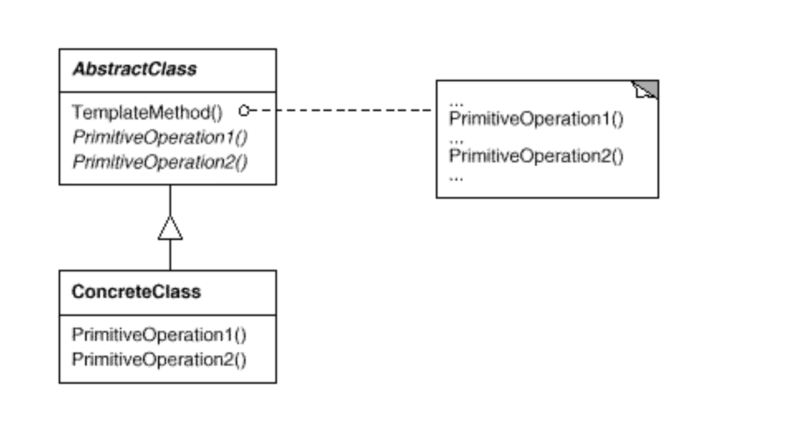
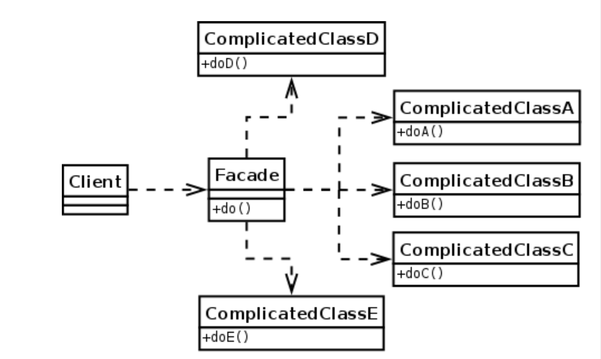

📋 PATTERN 1 : TEMPLATE METHOD
✅ Comment le reconnaître
Trucs et astuces :
- ✅ Classe abstraite avec une méthode concrète (le template)
- ✅ Le template appelle des méthodes abstraites (primitive operations)
- ✅ Les sous-classes implémentent les méthodes abstraites
- ✅ Le squelette de l'algorithme est fixé, les détails sont variables
- ✅ Peut avoir des méthodes "hook" (optionnelles, avec implémentation par défaut)
Phrase clé : "Je reconnais Template Method grâce à une classe abstraite avec une méthode concrète qui appelle des méthodes abstraites que les sous-classes doivent implémenter."
📊 Schéma théorique
🖼️ Schéma de l'exercice
Le diagramme montre uniquement les classes liées au pattern Template Method (DwarvenMineWorker et ses sous-classes).
🔍 Correspondance Théorie / Exercice
| Participants théoriques | Noms utilisés dans le code | Explication |
|---|---|---|
| AbstractClass (Classe Abstraite) |
DwarvenMineWorker |
Classe abstraite qui définit le template method et les méthodes concrètes. |
| templateMethod() (Méthode Template) |
action(Action... actions) |
Méthode concrète qui orchestre l'exécution des actions. C'est le squelette de l'algorithme. |
| primitiveOperation() (Opération Abstraite) |
work()name() |
Méthodes abstraites que les sous-classes DOIVENT implémenter. Chaque type de worker a son propre travail. |
| hook() (Méthode Hook) |
goToSleep()wakeUp()goHome()goToMine() |
Méthodes concrètes avec implémentation par défaut. Les sous-classes peuvent les réutiliser ou les surcharger. |
| ConcreteClass (Classe Concrète) |
DwarvenGoldDiggerDwarvenCartOperatorDwarvenTunnelDigger |
Classes concrètes qui implémentent les opérations abstraites (work et name). |
💻 Code principal (structure)
1. La Classe Abstraite (AbstractClass)
package be.vinci.Ex5B;
public abstract class DwarvenMineWorker {
// ===== HOOKS (méthodes concrètes par défaut) =====
public void goToSleep() {
System.out.println(name()+" va dormir.");
}
public void wakeUp() {
System.out.println(name()+" se réveille.");
}
public void goHome() {
System.out.println(name()+" rentre chez lui.");
}
public void goToMine() {
System.out.println(name()+" va à la mine.");
}
// ===== TEMPLATE METHOD (méthode concrète) =====
// Orchestre l'exécution des actions
public void action(Action... actions) {
for (Action action : actions) {
action(action);
}
}
private void action(Action action) {
switch (action) {
case GO_TO_SLEEP:
goToSleep();
break;
case WAKE_UP:
wakeUp();
break;
case GO_HOME:
goHome();
break;
case GO_TO_MINE:
goToMine();
break;
case WORK:
work(); // ← Appelle la méthode abstraite !
break;
default:
System.out.println("Action non definie");
break;
}
}
// ===== PRIMITIVE OPERATIONS (méthodes abstraites) =====
// Les sous-classes DOIVENT les implémenter
public abstract void work();
public abstract String name();
static enum Action {
GO_TO_SLEEP, WAKE_UP, GO_HOME, GO_TO_MINE, WORK
}
}2. Les Classes Concrètes (ConcreteClass)
// DwarvenGoldDigger.java
public class DwarvenGoldDigger extends DwarvenMineWorker {
@Override
public void work() {
System.out.println(name()+" creuse pour trouver de l'or.");
}
@Override
public String name() {
return "Chercheur d'or nain";
}
}
// DwarvenCartOperator.java
public class DwarvenCartOperator extends DwarvenMineWorker {
@Override
public void work() {
System.out.println(name()+" enlève du minerai d'or de la mine.");
}
@Override
public String name() {
return "Opérateur de chariot nain";
}
}
// DwarvenTunnelDigger.java
public class DwarvenTunnelDigger extends DwarvenMineWorker {
@Override
public void work() {
System.out.println(name()+" crée un nouveau tunnel, cela sent l'or.");
}
@Override
public String name() {
return "Tunnelier nain";
}
}3. Utilisation
// Créer un worker
DwarvenMineWorker worker = new DwarvenGoldDigger();
// Utiliser le template method
worker.action(Action.WAKE_UP, Action.GO_TO_MINE, Action.WORK);🏛️ PATTERN 2 : FACADE
✅ Comment le reconnaître
Trucs et astuces :
- ✅ Une classe qui simplifie l'utilisation d'un système complexe
- ✅ Fournit une interface simple pour des opérations complexes
- ✅ Cache la complexité des sous-systèmes
- ✅ Le client n'a pas besoin de connaître les détails internes
- ✅ Coordonne plusieurs objets en une seule méthode
Phrase clé : "Je reconnais Facade grâce à une classe qui simplifie l'utilisation d'un système complexe en fournissant une interface simple."
📊 Schéma théorique
🖼️ Schéma de l'exercice
Le diagramme montre uniquement la classe Facade (DwarvenGoldmine) et sa relation avec les workers.

🔍 Correspondance Théorie / Exercice
| Participants théoriques | Noms utilisés dans le code | Explication |
|---|---|---|
| Facade (La Façade) |
DwarvenGoldmine |
Classe qui simplifie la gestion de tous les workers. Fournit des méthodes simples comme startNewDay(). |
| Subsystem Classes (Sous-systèmes) |
DwarvenGoldDiggerDwarvenCartOperatorDwarvenTunnelDigger |
Classes complexes que la Facade orchestre. Le client n'a pas besoin de les connaître directement. |
| Client | Main |
Utilise la Facade pour des opérations simples sans connaître la complexité interne. |
💻 Code principal (structure)
1. La Facade (Simplifie l'utilisation)
package be.vinci.Ex5B;
import java.util.ArrayList;
import java.util.Collection;
import java.util.List;
public class DwarvenGoldmine {
private final List<DwarvenMineWorker> workers;
public DwarvenGoldmine() {
// Construction du système complexe
workers = new ArrayList<>();
workers.add(new DwarvenGoldDigger());
workers.add(new DwarvenCartOperator());
workers.add(new DwarvenTunnelDigger());
}
// ===== INTERFACE SIMPLIFIÉE =====
// Le client appelle juste ces 3 méthodes !
public void startNewDay() {
makeActions(workers,
DwarvenMineWorker.Action.WAKE_UP,
DwarvenMineWorker.Action.GO_TO_MINE);
}
public void digOutGold() {
makeActions(workers, DwarvenMineWorker.Action.WORK);
}
public void endDay() {
makeActions(workers,
DwarvenMineWorker.Action.GO_HOME,
DwarvenMineWorker.Action.GO_TO_SLEEP);
}
// Méthode privée qui cache la complexité
private static void makeActions(Collection<DwarvenMineWorker> workers,
DwarvenMineWorker.Action... actions) {
for (DwarvenMineWorker worker : workers) {
worker.action(actions);
}
}
}2. Le Client (Main) - Interface Simplifiée !
package be.vinci.Ex5B;
public class Main {
public static void main(String[] args) {
// Création de la facade
DwarvenGoldmine jjGoldmine = new DwarvenGoldmine();
// Utilisation SIMPLE grâce à la Facade !
jjGoldmine.startNewDay(); // ← Une seule ligne !
jjGoldmine.digOutGold(); // ← Une seule ligne !
jjGoldmine.endDay(); // ← Une seule ligne !
}
}3. Comparaison : Avec vs Sans Facade
✅ AVEC Facade (Simple)
DwarvenGoldmine mine = new DwarvenGoldmine();
mine.startNewDay();
mine.digOutGold();
mine.endDay();3 lignes claires et simples !
❌ SANS Facade (Complexe)
List<DwarvenMineWorker> workers = new ArrayList<>();
workers.add(new DwarvenGoldDigger());
workers.add(new DwarvenCartOperator());
workers.add(new DwarvenTunnelDigger());
for (DwarvenMineWorker w : workers) {
w.action(Action.WAKE_UP, Action.GO_TO_MINE);
}
for (DwarvenMineWorker w : workers) {
w.action(Action.WORK);
}
for (DwarvenMineWorker w : workers) {
w.action(Action.GO_HOME, Action.GO_TO_SLEEP);
}15+ lignes répétitives et complexes !
❓ POURQUOI CE N'EST PAS STATE ?
🤔 La Question
"Il y a plusieurs Action (GO_TO_SLEEP, WAKE_UP, GO_HOME...), ce sont des états non ? Donc c'est le pattern State ?"
❌ Non, ce n'est PAS State !
Les 3 Différences Critiques :
| Critère | Pattern State | Notre Code (Template Method) |
|---|---|---|
| État stocké ? | ✅ Oui : private State currentState |
❌ Non : pas d'attribut d'état |
| Comportement dépend de l'état ? | ✅ Oui : state.handle() agit différemment |
❌ Non : chaque action est indépendante |
| Transition d'état ? | ✅ Oui : setState(newState) |
❌ Non : juste exécution d'actions |
📝 Explication Détaillée
1. Les Action ne sont PAS des états :
- Ce sont des commandes/actions ponctuelles
- Elles ne changent pas le comportement du worker
- Le worker n'a pas d'état interne qui persiste
2. Notre code exécute juste des actions :
worker.action(Action.WAKE_UP); // Action 1
worker.action(Action.GO_TO_MINE); // Action 2
worker.action(Action.WORK); // Action 3
// Le worker n'a PAS changé d'état !
// Il a juste exécuté 3 actions différentes3. Exemple de VRAI State Pattern :
// ✅ Pattern State (avec état interne)
public class LightSwitch {
private State state; // ← État stocké !
public LightSwitch() {
state = new OffState();
}
public void press() {
state.press(this); // Comportement dépend de l'état
}
public void setState(State newState) {
this.state = newState; // ← Transition d'état !
}
}
interface State {
void press(LightSwitch context);
}
class OffState implements State {
public void press(LightSwitch context) {
System.out.println("Allume");
context.setState(new OnState()); // Transition
}
}
class OnState implements State {
public void press(LightSwitch context) {
System.out.println("Éteint");
context.setState(new OffState()); // Transition
}
}🎯 Résumé
Notre code :
- ✅ Template Method : Définit un algorithme avec des étapes variables
- ✅ Facade : Simplifie l'utilisation du système
- ❌ PAS State : Les
Actionsont des commandes, pas des états
Pour être State, il faudrait :
- Un attribut
private State currentState - Des transitions :
setState(newState) - Un comportement qui change selon l'état actuel
🌳 POURQUOI CE N'EST PAS COMPOSITE ?
🤔 La Question
"DwarvenGoldmine contient une List<DwarvenMineWorker> et les traite uniformément. N'est-ce pas un Composite ? DwarvenMineWorker serait le Component et DwarvenGoldmine serait le Composite ?"
❌ Non, ce n'est PAS Composite !
Les 3 Critères Manquants :
| Critère | Pattern Composite | Notre Code (Facade) |
|---|---|---|
| Interface commune | ✅ Composite implémente Component | ❌ Mine n'implémente pas Worker |
| Méthode identique | ✅ operation() partout |
❌ action() vs startNewDay() |
| Récursivité | ✅ Composite peut contenir Composite | ❌ Pas de structure arborescente |
📝 Explication Détaillée
1. Critère #1 : Interface commune manquante
✅ Vrai Composite
interface Component {
void operation();
}
class Leaf implements Component {
void operation() { ... }
}
class Composite implements Component {
List<Component> children;
void operation() {
for (Component c : children) {
c.operation();
}
}
}Le Composite EST un Component !
❌ Notre Code
abstract class DwarvenMineWorker {
void action(Action... actions) { ... }
}
class DwarvenGoldDigger
extends DwarvenMineWorker { ... }
class DwarvenGoldmine { // ❌ Pas extends !
List<DwarvenMineWorker> workers;
void startNewDay() { ... } // Méthode différente
}La Mine N'EST PAS un Worker !
2. Critère #2 : Pas de récursivité
// ✅ Composite : Structure arborescente possible
Composite root = new Composite();
Composite subGroup = new Composite();
subGroup.add(new Leaf());
root.add(subGroup); // ← Composite dans Composite !
// ❌ Notre code : Impossible
DwarvenGoldmine mine = new DwarvenGoldmine();
// mine.add(new DwarvenGoldmine()); ← Impossible !
// La mine ne peut pas contenir d'autres mines3. Critère #3 : Interface différente
// ✅ Composite : Même méthode partout
worker.operation();
composite.operation(); // Même interface !
// ❌ Notre code : Méthodes différentes
worker.action(Action.WORK); // Pour les workers
mine.startNewDay(); // Pour la mine (différent !)🎯 Ce que nous avons réellement
Facade + Simple Collection
// C'est une FACADE qui coordonne des workers
class DwarvenGoldmine { // Facade
List<DwarvenMineWorker> workers; // Simple collection
// Interface simplifiée (≠ interface des workers)
void startNewDay() { ... }
void digOutGold() { ... }
void endDay() { ... }
}✅ Pour que ce SOIT un Composite :
Il faudrait refactorer comme ceci :
// 1. Interface commune
interface MineComponent {
void doWork();
}
// 2. Leaf (worker individuel)
class DwarvenGoldDigger implements MineComponent {
public void doWork() {
System.out.println("Creuse");
}
}
// 3. Composite (mine = groupe)
class DwarvenGoldmine implements MineComponent { // ← Implémente Component !
private List<MineComponent> workers;
public void doWork() { // ← Même méthode !
for (MineComponent w : workers) {
w.doWork();
}
}
}
// 4. Utilisation uniforme
MineComponent worker = new DwarvenGoldDigger();
MineComponent mine = new DwarvenGoldmine();
mine.add(worker);
// Même interface partout !
worker.doWork();
mine.doWork();🔑 Résumé
Règle d'or du Composite :
"Le conteneur DOIT implémenter la même interface que les éléments qu'il contient."
Dans notre code :
- ✅
DwarvenGoldminecontient desDwarvenMineWorker - ❌
DwarvenGoldminen'est PAS unDwarvenMineWorker - ➡️ Donc c'est une Facade, pas un Composite
⚠️ Piège classique : Toute collection d'objets traités uniformément n'est pas forcément un Composite !
💡 Conseils Supplémentaires
⚠️ Pièges à éviter
Template Method vs Strategy
- Template Method : Utilise l'héritage. Classe abstraite avec méthodes abstraites.
- Strategy : Utilise la composition. Interface injectée via constructeur/setter.
Facade vs Adapter
- Facade : Simplifie un système complexe. Interface plus simple.
- Adapter : Convertit une interface en une autre. Adapte une interface existante.
Actions (Enum) vs State Pattern
- Enum d'actions : Liste de commandes à exécuter. Pas d'état persistant.
- State Pattern : État interne qui change le comportement. Transitions entre états.
📚 Points Clés à Retenir
- Template Method fixe le squelette, les sous-classes remplissent les détails
- Facade cache la complexité et fournit une interface simple
- Les Actions ne sont pas des États
- Template Method = Héritage, Strategy = Composition
- Composite = Le conteneur implémente la même interface que ses éléments
- Facade avec Collection ≠ Composite